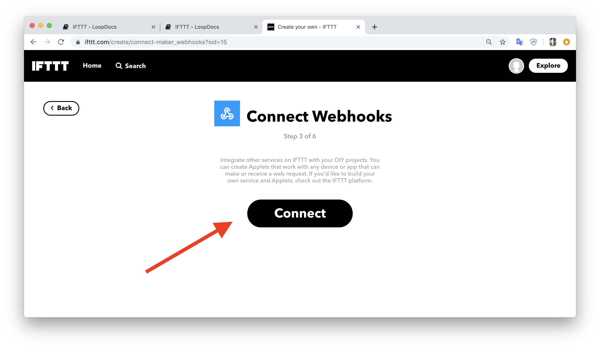

IFTTT Integration⌁
If This, Then That (IFTTT) is a useful Nightscout integration. By using IFTTT, you can have single button presses on your iPhone that will set an override, log a cannula change, log a sensor change and much more.
Step 1: Get your API Secret Hash⌁
First we need to gather one thing called your "hashed API Secret". In your internet browser, open a "console" window while viewing your Nightscout site. Make sure you have "authenticated" your site by using your API secret in the Nightscout settings area (hint: if you see a little padlock in the upper left corner of the site, you haven't authenticated it). Refresh the site and your hashed secret key will be shown as "apisecrethash: "xxxxxxxxxx...""
For Safari users on Mac, you can open the console window by selecting "Develop" from the Safari top menu, and then "Show Page Source" (if you do not see "Develop" in the top menu, activate it by going to Safari > Preferences... > Advanced, and checking the "Show Develop menu in menu bar" option). If you're having problems seeing the apisecrethash, click the little grey triangle next to the "status isAuthenticated" line and the objects below it will display (see screenshot). Your hashed API secret can be copied and pasted from that line, as shown below. Save that somewhere easy to get to again, because you will be using it later.
For Chrome users, the console window is found through the View >> Developer >> View Source. Click on the Console tab and scroll to find the "status isAuthenticated" row to find your apisecrethash. Copy your API hash to somewhere you can retreive it again, we will be copy/pasting it in Step 2.

Step 2: Create your "Applets"⌁
IFTTT calls their little actions that you'll create an "applet". I have no idea why. But, I will go along and use their terminology so we are all consistent. We are basically interested in creating applets that will be buttons on your phone to do cool things in Nightscout. So, you'll have a button that will log when you changed your sensor last...letting you see in Nightscout easily just how old a sensor is at any given time. Or you can create a button that will turn on an "exercise" override that you already programmed into your kid's Loop app. So, let's make our first applet (aka button).
- Get an IFTTT account

-
Login to your IFTTT.com account and select click this link to get to the page for creating your first "New Applet". (You can also get to this Applet creation page by selecting your Account icon in the upper right of the IFTTT website, then clicking on "Create".)
-
In the screen that appears, click on the black "+this" part of the screen

- In the next screen, type "button" in the search field and then click on the red box labelled "ButtonWidget"
- Connect the button widget by clicking on the large black"connect" button twice, once on the main screen and then second on the pop-up window that will appear immediately after that. (You will only have to "connect" the widgets for the first applet you make. After that the widgets will already connected to your IFTTT account.)

- Click on the large red "button press" box
- Click on the black "+that" text

- Enter "Webhooks" in the search field and click on the Webhooks app

- Connect the Webhooks app

- Select the blue "Make a Web Request" box

- Now you will have a blank web request template to complete. Screenshot below is an example of a completed recipe for eating soon IFTTT action. There are four parts you will need to fill in, and they are described below the screenshot.
URL
https://yoursite.herokuapp.com/api/v1/treatments.json (for all IFTTT recipes that are NOT remote overrides...so things like cannula changes, sensor changes, pump battery changes, etc.)
Change the "yoursite" to your actual site's info.
Method
The method will be POST
Content Type
The content type will be application/json.
Body
The content of the body will depend on the action that you would like this particular button press to perform. While many recipes are available, any recipe that log carbs to NS will only display the carbs in Nightscout...Loop will not "use" those carbs in treatment or prediction math. The display of carbs in NS though may still be helpful for remote care givers to leave an indication that a low is being noticed and treated. Some sample content for actions that may be useful in Loop: Pump Site Change {"enteredBy": "IFTTT-button", "eventType": "Site Change", "duration": 0, "secret": "your_hashed_api_goes_here!!!"} CGM Sensor Start {"enteredBy": "IFTTT-button", "eventType": "Sensor Start", "duration": 0, "secret": "your_hashed_api_goes_here!!!"} Note {"enteredBy": "IFTTT-button", "eventType": "Note", "notes": "Hi mom, please don't text me for a bit. I'm taking a test.", "secret": "your_hashed_api_goes_here!!!"}
Special note for IFTTT to set a Remote Override with dev branch
Triggering a remote override with IFTTT takes a couple considerations;
1. You have followed the directions for setting up remote overrides in Nightscout already.
2. Remote overrides will use https://yoursite.herokuapp.com/api/v2/notifications/loop for the URL line of the applet. Notice that is different from the other type of applets' URL.
3. The Body message of the applet needs to match the override already programmed in Loop app; the reason, reasonDisplay, and duration all need to match what is preset in your Loop app. The "duration" is giving in minutes in the body message (vs hours in Loop), and if the override is one that is "enabled indefinitely" then the duration is "infinite". The "reason" is the name of the override but NO EMOJI, and the "reasonDisplay" is the override name with the emoji. Check out the samples Body messages for overrides below. You will have to edit your body messages to match your reason and reasonDisplay. The target range and duration of the override does not need to be specified.
Body message for override named "hormones"
{"eventType": "Temporary Override", "reason": "hormones", "reasonDisplay": "üßü‚Äç‚ôÄÔ∏è hormones", "secret": "your_hashed_api_goes_here!!!"}
Body message for override named "running"
{"eventType": "Temporary Override", "reason": "running", "reasonDisplay": "üèÉ‚Äç‚ôÄÔ∏è running", "secret": "your_hashed_api_goes_here!!!"}
Body message for override named "Low Treatment"
{"eventType": "Temporary Override", "reason": "Low Treatment", "reasonDisplay": "üç¨ Low Treatment", "secret": "your_hashed_api_goes_here!!!"}
Body message to cancel any override
{"eventType": "Temporary Override Cancel", "secret": "your_hashed_api_goes_here!!!"}
-
Click the
Create Actionbutton on the bottom of the screen when you finish. -
Now is your chance to change the title of your applet now to something meaningful. You can turn on notifications, too, using the slider shown. If you turn on the notifications, you will get an alert on your phone and pebble watch when the button press has been successfully deployed. Finish the IFTTT button by clicking on the Finish button that appears.
- Repeat the setup for new applets for as many automated actions/overrides as you would like to setup.
Step 3: Enable IFTTT in your Nightscout site⌁
Now that we have cool applets made, we need to give Nightscout some information so that it will accept commands from our applets. It's pretty simple to do...just a couple additions to your Heroku settings.
- Find your Maker Key by going to your IFTTT account icon in upper right corner, choose "My services" and then click on the Webhooks service, settings.
- You will see your Maker Key as the last part of the URL after the
use/; copy and paste that last part (the red circled part as shown)

- Login to your Nightscout site host (azure or heroku) and (1) add your Maker Key to the MAKER_KEY line and (2) add "maker" to your ENABLE line.

Step 4: Install IFTTT app on your iPhone/Android⌁
Now that all the hard work is done, we can take easy street and just add that work to the phone via the IFTTT app. By accessing the IFTTT widget on your iPhone, you'll be able to easily and quickly access the useful buttons you've just created.
-
Download the IFTTT app on your phone and log in using your IFTTT account.
-
For iPhone users, if you swipe right from your iPhone's home screen, you will have the Today view showing. Scroll to the bottom, click "edit". This should show a list of existing widgets, followed by a list of "more widgets" with green + signs. Click on the IFTTT's green circle and the widget will be moved to the top, active widgets area. You can hold your finger on the three left lines of the IFTTT widget row to drag it to the top of your widget panel, if you prefer to have it as the top-most widget.
If you end up with more than four IFTTT applets, they will appear in reverse-order of when they were created...which may not be the same as you'd prefer them to appear on your widget bar. If you'd like to reorder them:
- go into your iPhone's IFTTT app
- click on My Applets
- click on the gear icon in upper left of screen
- click on Widgets
- click on the pencil icon in upper right of screen
- click and hold the three lines that appear on the right side of the widget that you want to move. Drag the widget to the order in the list that you'd like it to appear in your widget quickscreen.
Extra Credit: Alexa integration⌁
- Since you have IFTTT/Maker requests working, you can get it to work with anything that supports IFTTT, including Alexa. You will need to add "alexa" to your ENABLE line in your Heroku settings. And then repeat the steps above, but instead of using "ButtonWidget" service we started with earlier (the "+if" part of the setup)...you will use the "AmazonAlexa" service.

- Alexa requests do not need underscores, FYI.